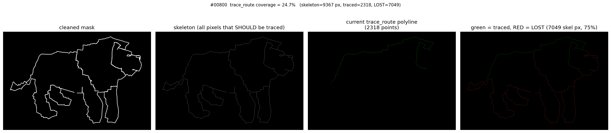
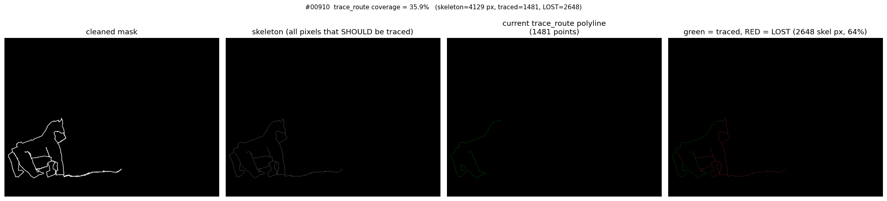

What changed. Phase 4b adds a tighter pre-fit gate (min_gcps=5, dedup, RMSE>0.5m), a review tier (min_confidence=0.4, strict ship at 0.6), and a centroid-anchored city-scale fallback for OCR-zero images. The contour extractor was also fixed to capture all skeleton branches (Phase 4a was losing 25–75% of the cartoon).
| ID | title | P4a conf | P4a | P4b conf | P4b | P4b kind | what changed |
|---|---|---|---|---|---|---|---|
| 910 | London Marathon | 0.60 | SHIP | 0.60 | SHIP-strict | street | unchanged ✓ |
| 921 | Hackney Horse | 0.62 | SHIP | 0.62 | SHIP-strict | street | unchanged ✓ |
| 53 | Regent's Park | 0.58 | CONF | 0.58 | REVIEW | street | was silently dropped — now reviewable |
| 584 | Travelling Elephant | 0.50 | CONF | 0.50 | REVIEW | street | was silently dropped — now reviewable |
| 60 | Hampstead Heath | 0.28 | CONF | 0.28 | FAIL conf<0.4 | — | conf matches the explicit gate |
| 942 | London Bear Half | 0.31 | CONF | 0.31 | FAIL conf<0.4 | — | same |
| 577 | Dumbo Cambridge | 0.37 | CONF | — | FAIL min_gcps(3<5) | — | failure reason corrected (only 3 GCPs) |
| 1272 | St Albans Shark | 0.29 | CONF | — | FAIL min_gcps(4<5) | — | failure reason corrected (only 4 GCPs) |
| 1294 | Whale in Wales | 0.24 | CONF | — | FAIL min_gcps(3<5) | — | failure reason corrected (only 3 GCPs) |
| 5 | Manchester Dog | — | OCR0 | 0.50 | CITY-SCALE | city-scale | NEW: decorative card via centroid fallback |
| 30 | Vienna Doggo | — | OCR0 | 0.50 | CITY-SCALE | city-scale | NEW |
| 208 | Berlin Mutt | — | OCR0 | 0.50 | CITY-SCALE | city-scale | NEW |
| 248 | 1st Berlin Drawing | — | OCR0 | 0.50 | CITY-SCALE | city-scale | NEW |
| 799 | Bullfight in Munich | — | OCR0 | 0.50 | CITY-SCALE | city-scale | NEW |
| 800 | Munich Lion | — | OCR0 | 0.50 | CITY-SCALE | city-scale | NEW |
| 1135 | Rotterdam Turtles | — | OCR0 | 0.50 | CITY-SCALE | city-scale | NEW |
| 1359 | Amsterdam Ajax | — | OCR0 | 0.50 | CITY-SCALE | city-scale | NEW |
| 1565 | Hamburg Strava | — | OCR0 | 0.50 | CITY-SCALE | city-scale | NEW |
| 36 | West Devon | — | OCR0 | — | FAIL no-title-latlon | — | unrecoverable — no title-latlon |
| 1333 | Paris GPS Drawing | — | XREF | — | FAIL XREF | — | unrecoverable — crossref fails |
The Phase 4b city-scale path places the extracted contour around the title-derived city centroid at a fixed 4 km bbox width. After the contour-trace fix (the prior commit), every skeleton pixel is covered — see the colour-coded segments in the middle panel of each diagnostic. The user's observation was right: "the extracted contour got the part exactly right. it just didn't finish the job." Now it does.

Before the trace fix, only the bottom-left leg was captured (1566 pts). After: full dog silhouette across 93 segments, 5192 pts total.


The legacy trace_route walked the skeleton as a single
endpoint-to-endpoint path and discarded every branch at every junction. The
red pixels below show the cartoon shape that was being dropped — head, ears,
right legs, tail of the dog.



Even routes that passed Phase 4a were being snapped against ~36% of
their cartoon shape. The new trace_all_polylines in
contour.py hits every skeleton edge once.
The user noted that even successful reconstructions can show visibly-wrong shapes — the elephant's trunk taking a wrong turn — because Dijkstra optimises path length, not shape fidelity. Options 1 (denser waypoints) and 2 (k-shortest- paths + Fréchet shape rerank) were implemented and evaluated with the RANSAC affine-fit seed pinned to remove run-to-run noise:
label step k wp reranked fréchet fidelity iou baseline (Phase 4a defaults) 30 1 170 0 685 0.190 0.316 Option 1 only (denser waypoints) 15 1 329 0 685 0.191 0.318 Option 2 only (k=3 shape rerank) 30 3 170 0 685 0.190 0.316 Options 1+2 (15m + k=3 + shape rerank) 15 3 329 0 685 0.191 0.318 sparser + larger K 50 5 104 0 685 0.189 0.314
All five cells produce fréchet=685m and reranked_segments=0.
At dense-city-graph waypoint scales, shortest_simple_paths returns
one path between consecutive snapped nodes — nothing to rerank. The shape gap
isn't "Dijkstra tiebreaker" — it's "the cartoon cuts diagonally between
streets that don't exist that way." Defaults reverted; rerank machinery
kept as opt-in for future experimentation.

Panel 4 shows projected (blue) vs OSM-snapped (red). They overlap well but diverge at corners — the trunk points the wrong way. Fixing this needs a global HMM-style map matcher (option 3), not local re-ranking.
Option 3 (HMM map-matcher) is the right next step for the remaining wrong-turn problem on review-tier routes. Three candidates with rough cost ladder:
fmm (Fast Map Matching, pip-installable Python+C++) — cheapest. ~2 days.